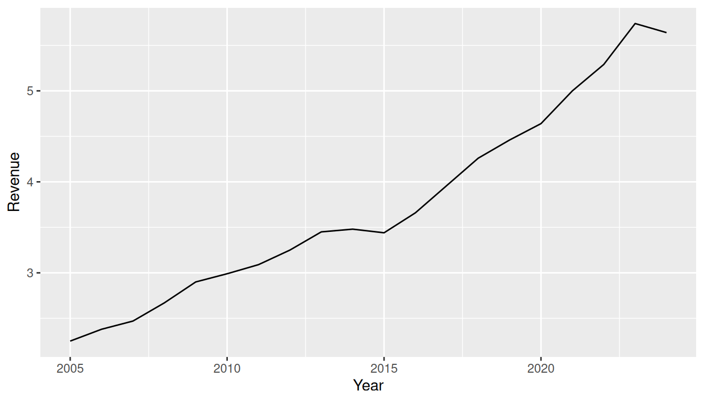
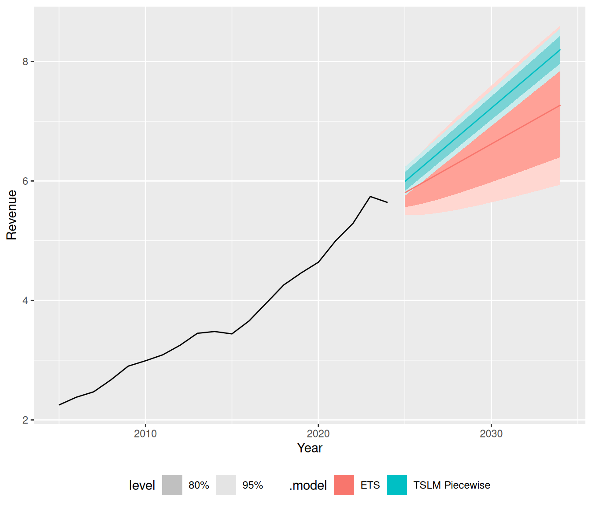
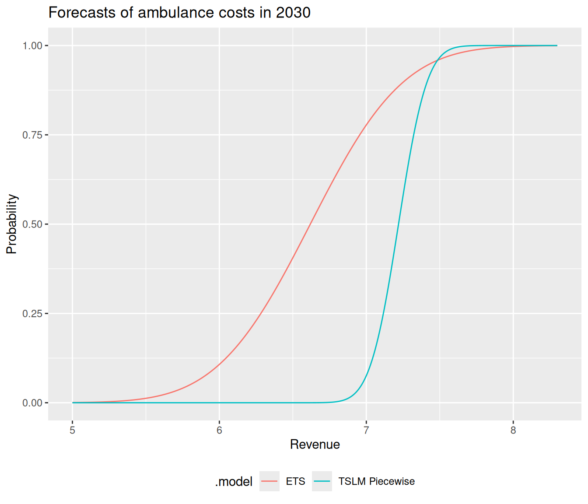
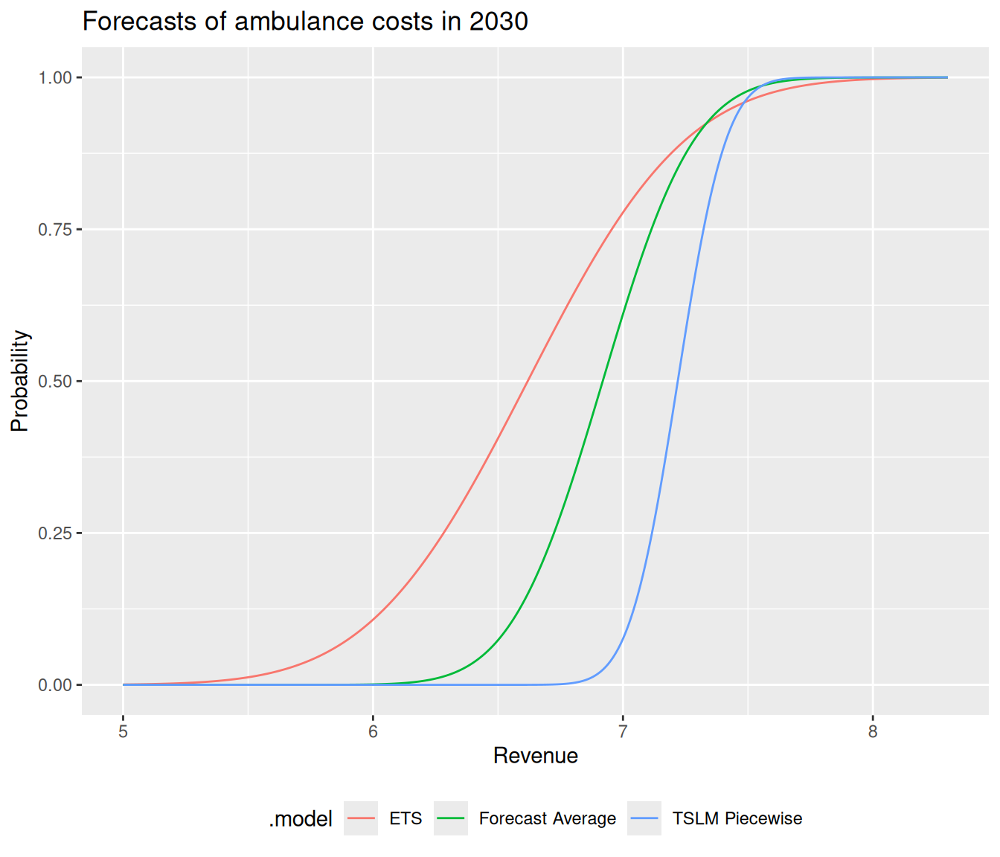
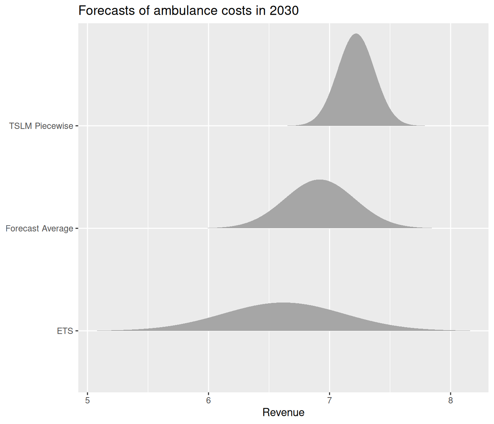
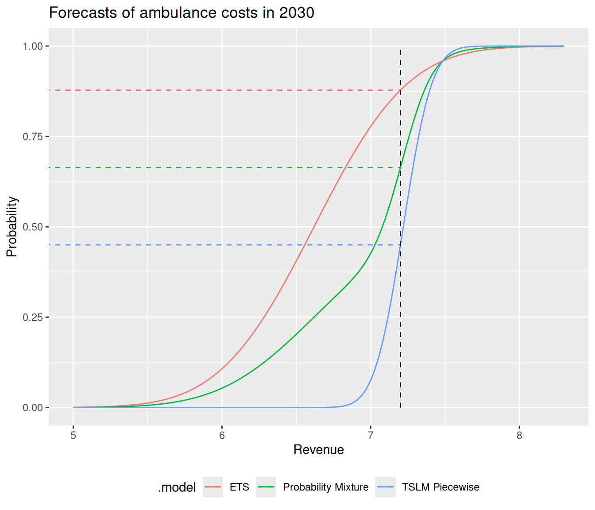
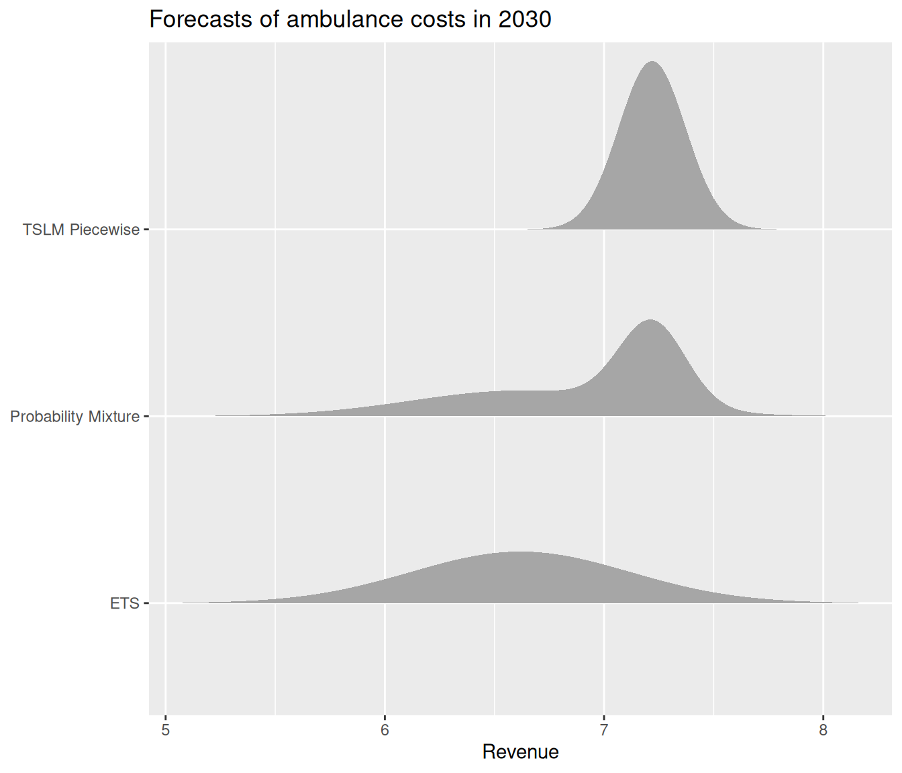
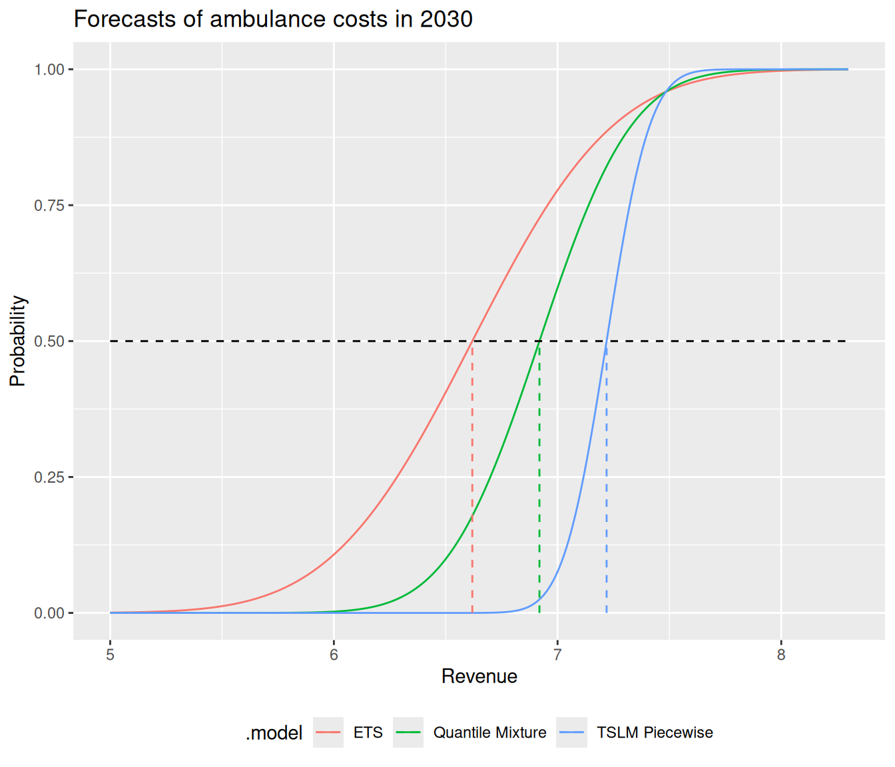
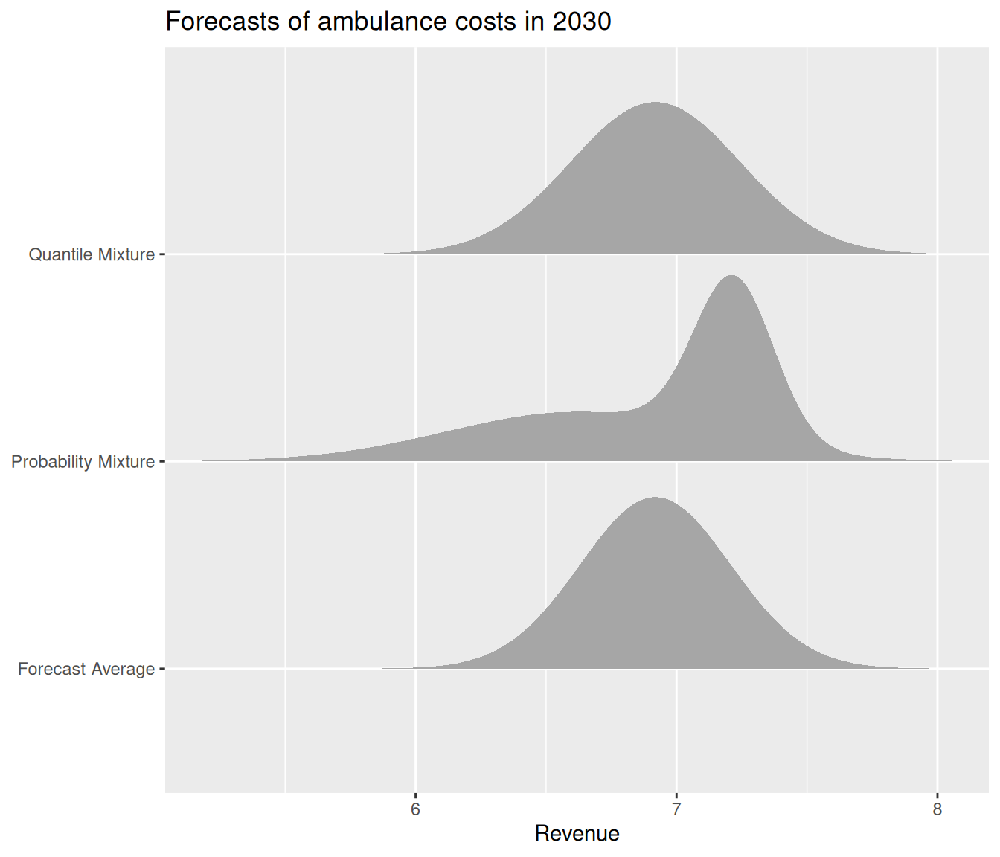
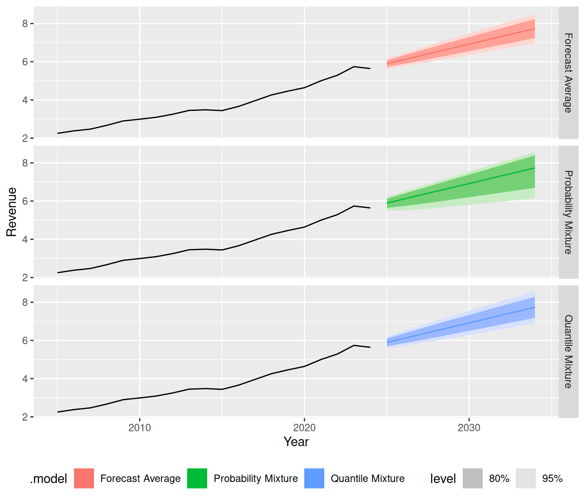

Forecast combinations
Ensembles
28th June 2026 @ ISF
Mitchell O’Hara-Wild, Nectric


Single-series combinations
🧩 Decomposition forecasting
Combining forecasts for components of a time series.
🎛️ Ensemble forecasting
Averaging different forecasts of the same time series.

Why use ensemble forecasts?
✅ Advantages
The fundamental benefit of ensembling is that it averages over model uncertainty. This produces forecasts that are:
- More accurate: generally better than any single model
- More robust: less sensitive to any single model
- Better calibrated: forecast uncertainty incorporates uncertainty of model specification.
⚠️ Downsides
- More complex: to specify, tune, and interpret
- More expensive: many models to fit and forecast
Three ways to average forecasts
🎲 Mean of random variables
\[\bar{X} = \sum_{i} w_i X_i\]
Averaging outcomes (samples)
🔀 Probability Mixture (linear pooling)
\[ F(x) = \sum_{i=1}^{n} w_i \cdot F_i(x), \hspace{1em} f(x) = \sum_{i=1}^{n} w_i \cdot f_i(x) \]
Averaging probabilities (PDF/CDF)
📊 Quantile Mixture (Vincentization)
\[ F^{-1}(p) = \sum_{i=1}^{n} w_i \cdot F_i^{-1}(p) \]
Averaging quantiles (inverse CDF)
Ensemble weights \(w_i\)
⚖️ Equal weighting
\[w_i = 1/N\]
Default; robust when model ranking is uncertain.
📉 Performance-based weighting
\[w_i \propto 1/\hat\sigma^2_i \quad \text{or} \quad w_i \propto 1/\widehat{\text{MSE}}_i\]
Weight by inverse variance or inverse MSE.
🗺️ Feature-based weighting
\[w_i = f(\text{series features})\]
FFORMS selects a single model (\(w_i \in \{0,1\}\));
FFORMA estimates weights from series features (\(w_i \in [0,1]\)).

Other weighting strategies
⏳ Time-varying weights
Some models are better short-term, others long-term.
🔄 Online / adaptive weights
Weights updated iteratively as new observations arrive.
🧑💼 Expert judgement
Weights reflect model credibility rather than past performance alone.
Australian ambulance costs

Future trend?
The trend changed in 2015 after a drop.
Will it change again following the 2024 drop?
Australian ambulance costs
Code
ambulance_fc <- ambulance |>
model(
ETS = ETS(Revenue),
`TSLM Piecewise` = TSLM(Revenue ~ trend(knots = 2015))
) |>
mutate(
`Mean of RV` = (ETS + `TSLM Piecewise`)/2L
) |>
forecast(h = "10 years")
avg_ensemble <- ambulance_fc |>
filter(.model == "Mean of RV")
ambulance_fc <- ambulance_fc |>
filter(.model != "Mean of RV")
ambulance_fc |>
autoplot(ambulance) +
theme(legend.position = "bottom")
Australian ambulance costs

Three ways to average forecasts
Mean of random variables

Mean of random variables

Three ways to average forecasts
Probability mixtures

Probability mixtures

Three ways to average forecasts
Quantile mixtures

Quantile mixtures
Ensemble methods

Ensemble forecasts

Demo
Exercise: Ensemble forecasting
Produce an ensemble for Australian Electricity Production (aus_production).
Your turn
- Fit several models for electricity production
- Combine them into an equal-weighted ensemble
(averaging random variables is currently simplest) - Compare the accuracy of the ensemble with individual models
- Experiment with unequal weights.
Can you beat equal weighting?
Exercise: Ensemble forecasting
Produce an ensemble for Australian Electricity Production (aus_production).
- Fit several models for electricity production
Exercise: Ensemble forecasting
- Compare the accuracy of the ensemble with individual models
# A tibble: 3 × 10
.model .type ME RMSE MAE MPE MAPE MASE RMSSE ACF1
<chr> <chr> <dbl> <dbl> <dbl> <dbl> <dbl> <dbl> <dbl> <dbl>
1 ARIMA Training -38.6 708. 445. -0.0136 1.45 0.394 0.513 -0.0387
2 Ensemble Training -17.6 718. 449. 0.0627 1.42 0.398 0.520 -0.0305
3 ETS Training 3.44 753. 474. 0.139 1.48 0.420 0.545 -0.0145Exercise: Ensemble forecasting
- Experiment with unequal weights
Can you beat equal weighting?
Code
# A tibble: 4 × 10
.model .type ME RMSE MAE MPE MAPE MASE RMSSE ACF1
<chr> <chr> <dbl> <dbl> <dbl> <dbl> <dbl> <dbl> <dbl> <dbl>
1 ARIMA Training -38.6 708. 445. -0.0136 1.45 0.394 0.513 -0.0387
2 W_Ensemble Training -18.9 717. 448. 0.0579 1.42 0.397 0.519 -0.0313
3 Ensemble Training -17.6 718. 449. 0.0627 1.42 0.398 0.520 -0.0305
4 ETS Training 3.44 753. 474. 0.139 1.48 0.420 0.545 -0.0145Exercise: Ensemble forecasting
- Experiment with unequal weights
Can you beat equal weighting?
Code
aus_production |>
stretch_tsibble(.init = 40, .step = 4) |>
model(
ETS = ETS(Electricity),
ARIMA = ARIMA(sqrt(Electricity))
) |>
mutate(
Ensemble = combination_ensemble(ETS, ARIMA),
W_Ensemble = combination_ensemble(ETS, ARIMA, weights = "inv_var")
) |>
forecast(h = 4) |>
accuracy(aus_production) |>
arrange(RMSE)# A tibble: 4 × 10
.model .type ME RMSE MAE MPE MAPE MASE RMSSE ACF1
<chr> <chr> <dbl> <dbl> <dbl> <dbl> <dbl> <dbl> <dbl> <dbl>
1 Ensemble Test -78.0 1005. 646. -0.0880 1.77 0.569 0.724 0.425
2 W_Ensemble Test -83.9 1006. 647. -0.102 1.77 0.569 0.725 0.426
3 ETS Test 3.43 1010. 657. 0.0956 1.78 0.578 0.728 0.430
4 ARIMA Test -159. 1024. 658. -0.272 1.81 0.579 0.738 0.428Out-of-sample evaluation
In-sample accuracy is unrealistic for actual forecasting performance.
What about cross-validated accuracy?
Forecast combination puzzle
Finding ensemble weights that outperform equal weights is surprisingly difficult.
(Even when models clearly differ in quality.)
✅ Solving the puzzle
Frazier, Covey, Martin & Poskitt (2023) solve the puzzle and explain the root cause.
Forecast combination puzzle
🪜 The two-step workflow
- Estimate component models
- Estimate combination weights
Each step ignores uncertainty from the other.
Frazier, Covey, Martin & Poskitt (2023) explore jointly estimating models with weights.
🔗 Joint estimation
Estimate model parameters and weights together:
\[(\hat\theta, \hat w) = \arg\min_{\theta,\, w} \mathcal{L}(y, \textstyle\sum_i w_i f_i(\theta_i))\]
Joint estimation produces better results with unequal weights.
Aside: Synthetic data for LFMs
Weighted ensembles are used to simulate synthetic time series for training large forecasting models (LFMs).
🎲 Simulating from an ensemble
Generate diverse synthetic time series with different weighted combinations of component model simulations.
📐 Why this is useful
- Foundation models learn unequal weights of models
- Essentially learns combinations without the puzzle
- Covers a wider range of temporal structures
⏰ Time for a (short) break!
Up next… reconciliation
- Combine forecasts across multiple series
- Archetypes for common coherency constraints
- Learn various reconciliation methods and weights